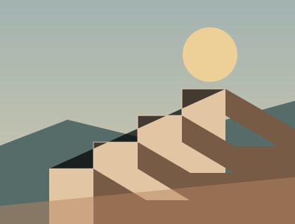
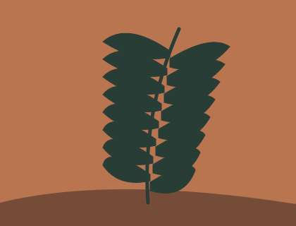
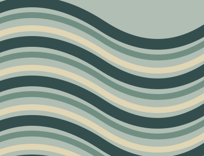

私人观察集 / MATERIAL ARCHIVE
把时间，摊开来看。
从细节里，
读出故事。

01 / 光影练习
光的方向

02 / 形态练习
植物的痕迹

03 / 线条练习
潮汐的边界
04 / 节奏练习
重复与差异
05 / 构成练习
空间的记忆
06 / 负形练习
留下的轮廓
看
从一张开始，
找到它与另一张的关系。
原创材料
NOT HISTORICAL RECORDS
Pause
0.0 / 8s